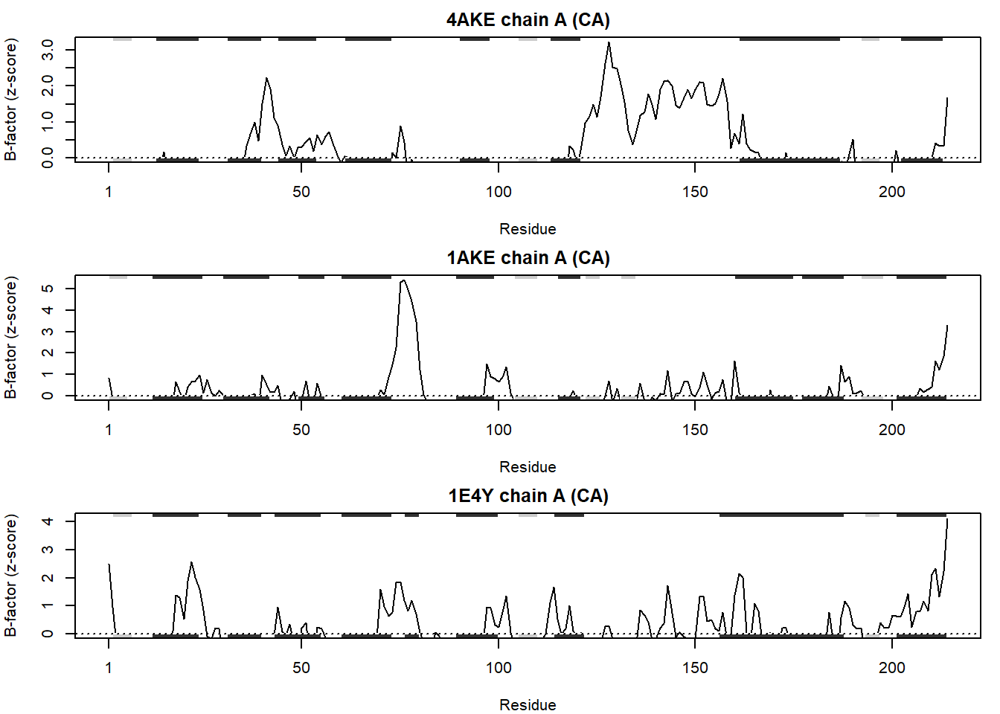
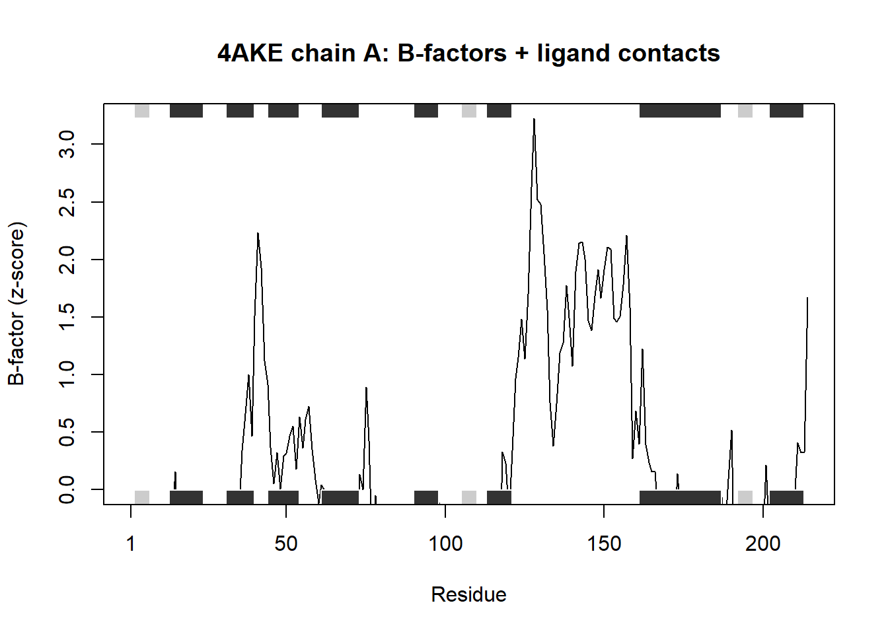

df <- data.frame(a=1:10, b=seq(200,400,length=10),c=11:20,d=NA)
df$a <- (df$a - min(df$a)) / (max(df$a) - min(df$a))
df$b <- (df$b - min(df$a)) / (max(df$b) - min(df$b))
df$c <- (df$c - min(df$c)) / (max(df$c) - min(df$c))
df$d <- (df$d - min(df$d)) / (max(df$a) - min(df$d))hwclass6
original for A (can you improve this analysis code?)
improved version of A)
df <- data.frame(
a = 1:10,
b = seq(200, 400, length.out = 10),
c = 11:20,
d = NA_real_
)
minmax01 <- function(x) {
if (all(is.na(x))) return(x) # keep all-NA columns as NA
rng <- range(x, na.rm = TRUE)
if (diff(rng) == 0) return(rep(0, length(x))) # constant column -> all 0
(x - rng[1]) / (rng[2] - rng[1])
}
cols <- c("a", "b", "c", "d")
df[cols] <- lapply(df[cols], minmax01)
df a b c d
1 0.0000000 0.0000000 0.0000000 NA
2 0.1111111 0.1111111 0.1111111 NA
3 0.2222222 0.2222222 0.2222222 NA
4 0.3333333 0.3333333 0.3333333 NA
5 0.4444444 0.4444444 0.4444444 NA
6 0.5555556 0.5555556 0.5555556 NA
7 0.6666667 0.6666667 0.6666667 NA
8 0.7777778 0.7777778 0.7777778 NA
9 0.8888889 0.8888889 0.8888889 NA
10 1.0000000 1.0000000 1.0000000 NAoriginal for B (can you improve this analysis code?)
# Can you improve this analysis code?
library(bio3d)Warning: package 'bio3d' was built under R version 4.4.3s1 <- read.pdb("4AKE") # kinase with drug Note: Accessing on-line PDB files2 <- read.pdb("1AKE") # kinase no drug Note: Accessing on-line PDB file
PDB has ALT records, taking A only, rm.alt=TRUEs3 <- read.pdb("1E4Y") # kinase with drug Note: Accessing on-line PDB files1.chainA <- trim.pdb(s1, chain="A", elety="CA")
s2.chainA <- trim.pdb(s2, chain="A", elety="CA")
s3.chainA <- trim.pdb(s1, chain="A", elety="CA")
s1.b <- s1.chainA$atom$b
s2.b <- s2.chainA$atom$b
s3.b <- s3.chainA$atom$b
plotb3(s1.b, sse=s1.chainA, typ="l", ylab="Bfactor")
plotb3(s2.b, sse=s2.chainA, typ="l", ylab="Bfactor")
plotb3(s3.b, sse=s3.chainA, typ="l", ylab="Bfactor")
improved version of B)
library(bio3d)
# ---- helpers ----
get_chain_ca <- function(pdb, chain="A") {
x <- trim.pdb(pdb, chain = chain, elety = "CA")
if (is.null(x$atom) || nrow(x$atom) == 0) {
stop("No CA atoms found for chain ", chain, " in this PDB.")
}
x
}
zscore <- function(v) (v - mean(v, na.rm = TRUE)) / sd(v, na.rm = TRUE)
# ---- read PDBs ----
pdb_ids <- c("4AKE", "1AKE", "1E4Y")
pdbs <- lapply(pdb_ids, read.pdb) Note: Accessing on-line PDB fileWarning in get.pdb(file, path = tempdir(), verbose = FALSE):
C:\Users\kenny\AppData\Local\Temp\Rtmpq0FJau/4AKE.pdb exists. Skipping download Note: Accessing on-line PDB fileWarning in get.pdb(file, path = tempdir(), verbose = FALSE):
C:\Users\kenny\AppData\Local\Temp\Rtmpq0FJau/1AKE.pdb exists. Skipping download PDB has ALT records, taking A only, rm.alt=TRUE
Note: Accessing on-line PDB fileWarning in get.pdb(file, path = tempdir(), verbose = FALSE):
C:\Users\kenny\AppData\Local\Temp\Rtmpq0FJau/1E4Y.pdb exists. Skipping download# ---- trim to chain A CA ----
chainA <- lapply(pdbs, get_chain_ca, chain="A")
# ---- extract B-factors ----
braw <- lapply(chainA, function(x) x$atom$b)
bz <- lapply(braw, zscore)
# ---- plotting ----
op <- par(mfrow = c(3, 1), mar = c(4, 4, 2, 1))
for (i in seq_along(pdb_ids)) {
plotb3(
bz[[i]],
sse = chainA[[i]],
typ = "l",
ylab = "B-factor (z-score)",
main = paste0(pdb_ids[i], " chain A (CA)")
)
abline(h = 0, lty = 3)
}
par(op)Q6. How would you generalize the original code above to work with any set of input orotein structures
library(bio3d)
analyze_protein_drug <- function(pdb_inputs,
chain = "A",
target = 1,
protein_elety = "CA",
ligand_resids = NULL,
contact_cutoff = 4.0,
normalize_b = TRUE) {
# ---- helpers ----
zscore <- function(x) {
if (!normalize_b) return(as.numeric(x))
if (all(is.na(x))) return(as.numeric(x))
s <- sd(x, na.rm = TRUE)
if (is.na(s) || s == 0) return(rep(0, length(x)))
(x - mean(x, na.rm = TRUE)) / s
}
get_chain_elety <- function(pdb) {
x <- trim.pdb(pdb, chain = chain, elety = protein_elety)
if (is.null(x$atom) || nrow(x$atom) == 0)
stop("No ", protein_elety, " atoms found for chain ", chain, ".")
x
}
ligand_idx <- function(pdb) {
a <- pdb$atom
if (!is.null(ligand_resids)) {
return(which(toupper(a$resid) %in% toupper(ligand_resids)))
}
# heuristic ligand selection
water <- c("HOH", "WAT")
ions <- c("NA","K","CL","CA","MG","ZN","MN","FE","CU","CO")
which(a$type == "HETATM" &
!(toupper(a$resid) %in% water) &
!(toupper(a$resid) %in% ions))
}
contact_counts <- function(pdb) {
# plotting residues (CA or chosen elety)
sel_plot <- atom.select(pdb, chain = chain, elety = protein_elety)
plot_atoms <- pdb$atom[sel_plot$atom, , drop = FALSE]
counts <- integer(nrow(plot_atoms))
# protein chain all atoms
sel_prot <- atom.select(pdb, chain = chain, "protein")
prot <- trim.pdb(pdb, sel_prot)
# ligand heavy atoms
li <- ligand_idx(pdb)
if (length(li) == 0) return(list(counts = counts, resno = plot_atoms$resno, resid = plot_atoms$resid, ligands = character()))
li <- li[toupper(pdb$atom$elety[li]) != "H"]
if (length(li) == 0) return(list(counts = counts, resno = plot_atoms$resno, resid = plot_atoms$resid, ligands = character()))
prot_xyz <- matrix(prot$xyz, ncol = 3, byrow = TRUE)
lig_xyz <- matrix(pdb$xyz[atom.select(pdb, atom = li)$xyz], ncol = 3, byrow = TRUE)
d <- dist.xyz(prot_xyz, lig_xyz)
pairs <- which(d <= contact_cutoff, arr.ind = TRUE)
if (nrow(pairs) > 0) {
tab <- table(prot$atom$resno[pairs[, 1]])
plot_res <- as.character(plot_atoms$resno)
hit <- intersect(plot_res, names(tab))
counts[match(hit, plot_res)] <- as.integer(tab[hit])
}
list(
counts = counts,
resno = plot_atoms$resno,
resid = plot_atoms$resid,
ligands = unique(pdb$atom$resid[li])
)
}
# ---- checks ----
stopifnot(is.character(pdb_inputs), length(pdb_inputs) >= 1)
stopifnot(target >= 1, target <= length(pdb_inputs))
# ---- main workflow ----
pdbs <- lapply(pdb_inputs, read.pdb)
trimmed <- lapply(pdbs, get_chain_elety)
b_list <- lapply(trimmed, function(x) zscore(x$atom$b))
cont <- lapply(pdbs, contact_counts)
# ---- plot target ----
b <- b_list[[target]]
sse <- trimmed[[target]]
cc <- cont[[target]]$counts
n <- min(length(b), length(cc), nrow(sse$atom))
b <- b[1:n]; cc <- cc[1:n]; sse$atom <- sse$atom[1:n, , drop = FALSE]
plotb3(b, sse = sse, typ = "l",
main = paste0(pdb_inputs[[target]], " chain ", chain, ": B-factors + ligand contacts"),
ylab = if (normalize_b) "B-factor (z-score)" else "B-factor")
hits <- which(cc > 0)
if (length(hits)) {
rug(hits, col = "gray40")
legend("topright",
legend = c("B-factor", "contact residues"),
lty = c(1, NA), pch = c(NA, 124), bty = "n")
}
invisible(list(
settings = list(chain = chain, target = target, protein_elety = protein_elety,
ligand_resids = ligand_resids, contact_cutoff = contact_cutoff,
normalize_b = normalize_b),
b_factors = b_list,
contacts = lapply(cont, `[[`, "counts"),
residue_map = lapply(cont, function(x) data.frame(resno = x$resno, resid = x$resid)),
ligands_found = lapply(cont, `[[`, "ligands")
))
}
# Example call
res <- analyze_protein_drug(c("4AKE","1AKE","1E4Y"), chain="A", target=1) Note: Accessing on-line PDB fileWarning in get.pdb(file, path = tempdir(), verbose = FALSE):
C:\Users\kenny\AppData\Local\Temp\Rtmpq0FJau/4AKE.pdb exists. Skipping download Note: Accessing on-line PDB fileWarning in get.pdb(file, path = tempdir(), verbose = FALSE):
C:\Users\kenny\AppData\Local\Temp\Rtmpq0FJau/1AKE.pdb exists. Skipping download PDB has ALT records, taking A only, rm.alt=TRUE
Note: Accessing on-line PDB fileWarning in get.pdb(file, path = tempdir(), verbose = FALSE):
C:\Users\kenny\AppData\Local\Temp\Rtmpq0FJau/1E4Y.pdb exists. Skipping download